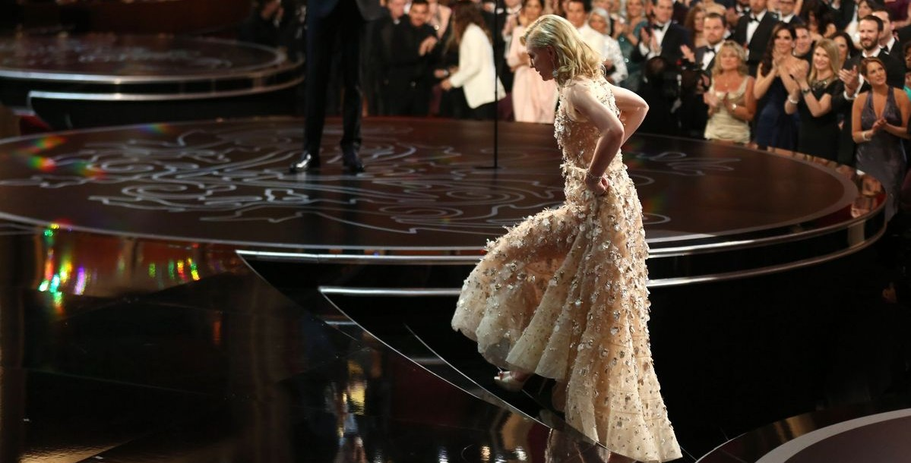

LA INTERPRETACIÓN QUE LE DIÓ EL ÓSCAR
Bajo la dirección de Woody Allen, Blanchett interpreta a Jasmine French, una mujer de la alta sociedad neoyorquina cuya vida se derrumba tras perder su fortuna.
El personaje, quebrado y complejo, permitió a la actriz explorar emociones extremas con una entrega total. Su trabajo fue ampliamente aclamado por la crítica y el público, obteniendo múltiples premios internacionales, entre ellos el Óscar, el Globo de Oro y el BAFTA a Mejor Actriz, consolidando su lugar en la historia del cine contemporáneo.